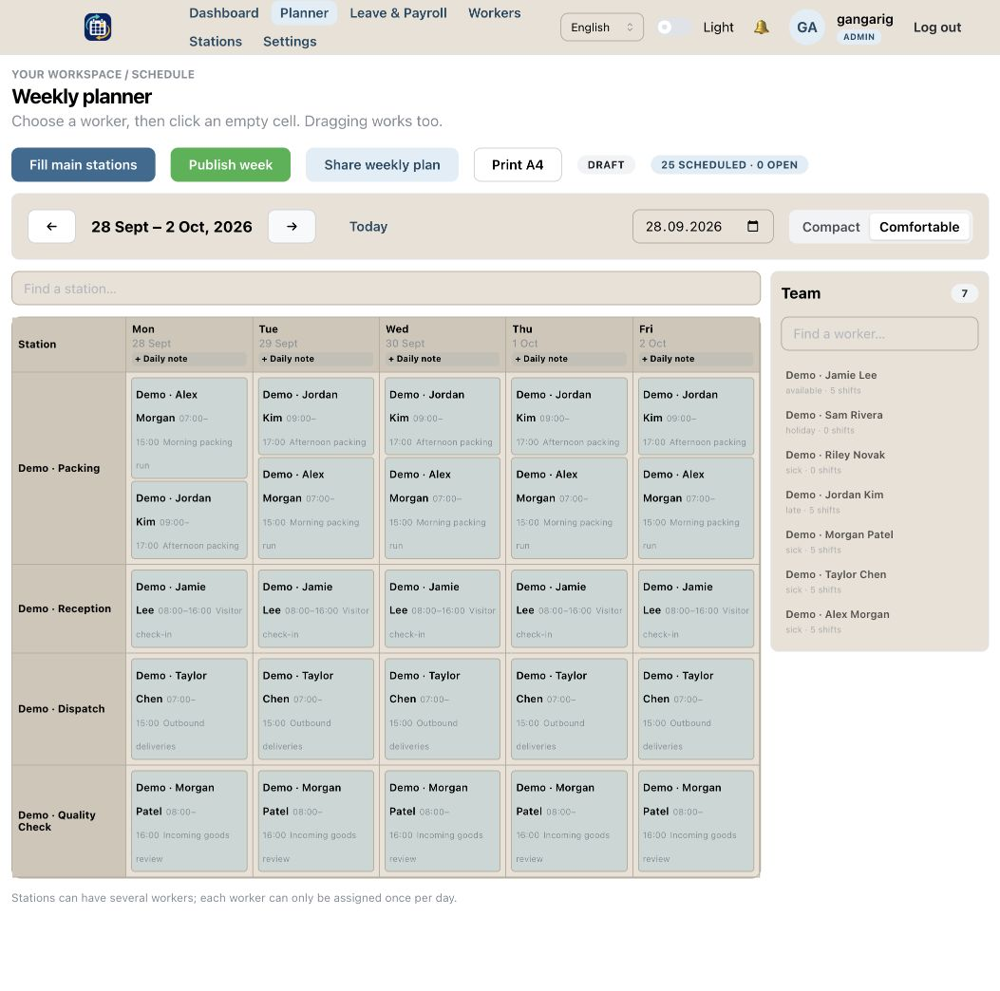

Staff scheduling · Interactive web app
ShiftPlannerDemo
A clearer view of the working week. Plan shifts, manage workers and stations, and keep track of time off in one place.

The starting point
A practical workplace need: make weekly staffing, station assignments, and availability easier to see together.
What I built
A React and TypeScript interface connected to Supabase, with authentication, role-based workflows, and an interactive weekly planner.
Try it yourself
A separate public demo with fictional sample data. Register to explore the app without accessing the workplace project.